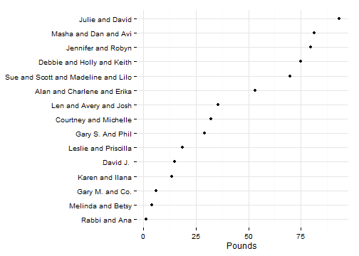
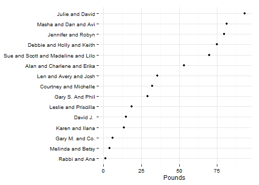
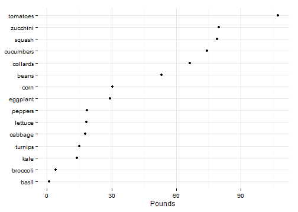

Pe'ah Garden stats
Results for 2013
2013 overall results
2013 had the lowest yields for any year to date. We grew 608 pounds of vegetables or about 68,000 calories - roughly one month of food for an adult. This is less than 1/2 last year's total, although still a lot of food.
Here is the same result in pounds harvested.
2013 individual results
Individual results for the year are listed in the table below. (Some gardeners harvested more than one crop for the pe'ah contribution, so each crop is shown in that case.)
| Name | Crop | Pounds | Calories |
|---|---|---|---|
| Alan and Charlene and Erika | beans | 53 | 7494 |
| Courtney and Michelle | corn | 29 | 12903 |
| Courtney and Michelle | squash | 1 | 73 |
| Courtney and Michelle | tomatoes | 2 | 153 |
| David J. | lettuce | 15 | 1022 |
| Debbie and Holly and Keith | squash | 75 | 5448 |
| Gary M. and Co. | tomatoes | 6 | 409 |
| Gary S. And Phil | eggplant | 29 | 3187 |
| Jennifer and Robyn | zucchini | 80 | 5793 |
| Julie and David | tomatoes | 93 | 6333 |
| Karen and Ilana | kale | 14 | 3121 |
| Len and Avery and Josh | cabbage | 18 | 2015 |
| Len and Avery and Josh | squash | 3 | 218 |
| Len and Avery and Josh | turnips | 15 | 1907 |
| Leslie and Priscilla | peppers | 18 | 1680 |
| Masha and Dan and Avi | basil | 1 | 104 |
| Masha and Dan and Avi | cucumbers | 74 | 5056 |
| Masha and Dan and Avi | tomatoes | 6 | 409 |
| Melinda and Betsy | broccoli | 4 | 617 |
| Rabbi and Ana | corn | 2 | 667 |
| Sue and Scott and Madeline and Lilo | collards | 66 | 9057 |
| Sue and Scott and Madeline and Lilo | lettuce | 3 | 221 |
The full data for all years can be found here.
Congratulations Courtney, Michelle, Julie and David! These two groups had the most successful plots for the last year. Courtney and Michelle harvested over 13,000 calories or roughly one week of food for someone in the New Haven community.
 

A few crops did better than others for the year.

Comparison with prior years
Lower yields were basically across-the-board - it was a historically bad year for pretty much everything we planted.
The charts below show the cumulative harvests (in pounds) by week for the past several years. These can help compare the current harvest at any point to prior years. Choose the crop you want and add / remove years if needed.